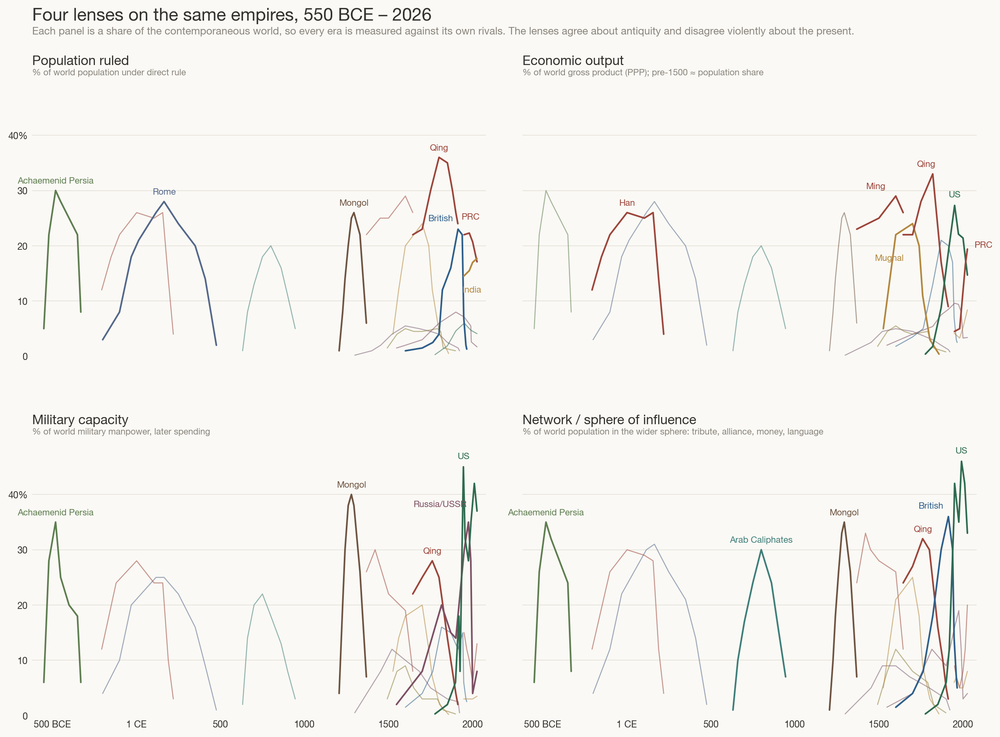
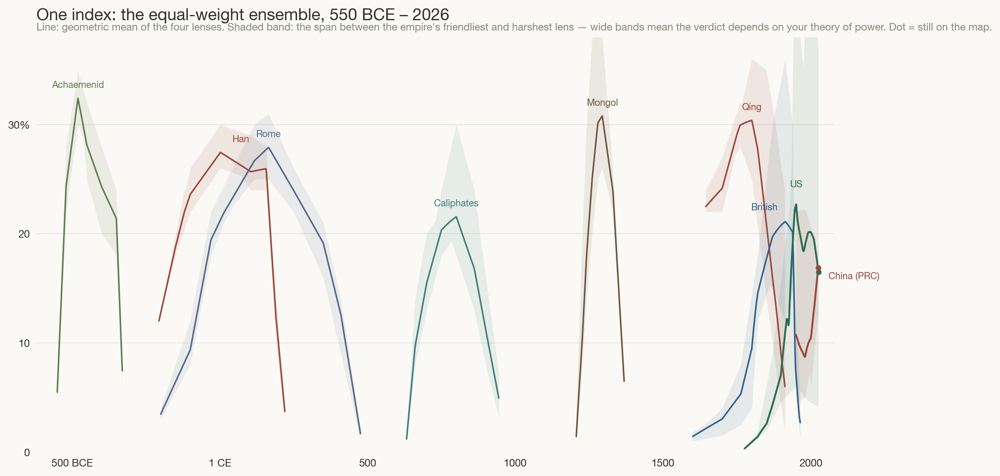
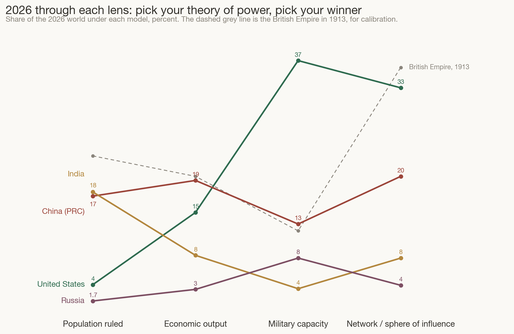

People, output, force, influence — four models of empire, exchanged into one index. A sequel to The Shape of Empires.
Build: one session (12 June 2026), ~45 minutes wall-clock · tokens (estimated): ≈1.5M in (mostly cached context re-reads, plus rendering and visually inspecting every chart iteration) / ≈45k out (data tables, code, page, narrative) · model: Claude Fable 5. Figures are estimates from the session log, not billing telemetry.
The previous post refused to compare across epochs: it measured land for everyone, switched honestly to GDP for the moderns, and left the two charts un-exchangeable. This post attempts the exchange rate. The result is not one true number — it is four defensible numbers, an ensemble that averages them, and an instrument panel that lets you disagree with me.
Every absolute measure of power dies outside its own era. Square kilometres flatter the Mongols with empty steppe and call 1942 Japan a great power while B-29s were being drawn. GDP barely means anything before 1500, when nearly everyone farmed at subsistence. Armies inflate with population; navies exist only after ships matter. The one trick that survives is to stop measuring things and start measuring shares: power is relational, so express every candidate metric as a fraction of the contemporaneous world — Rome against the world of 117 CE, America against the world of 2026.
Four lenses, each a share of its own world:
Formally, for empire e and lens :
How to read the indices, since this symbol carries three of them: the subscript e names whose share (the empire), the superscript (k) in parentheses names which lens — it is a label, not a power — and t is the calendar year. So reads “America’s share of world military capacity in 2026.” is the lens’s raw quantity — people, output, soldiers-or-spending, sphere population — and dividing by the world total is what turns it into a share. When a superscript is a true exponent, it will sit bare, without parentheses, like the weights in (2.3) below.
One closure assumption stitches the epochs together. Before roughly 1500, per-capita output everywhere sat near subsistence, so an empire’s share of output was its share of mouths:
That is not a convenience; it is the deep reason your first post’s land-vs-GDP tension exists at all. The lenses used to coincide. Land grew people, people were output, output paid soldiers. Modernity is precisely the era in which the four lenses tore apart — and the size of the tear is measurable.
Here are fifteen of the largest polities of the last twenty-five centuries — the same cast as the cascade, thinned to those with defensible numbers — drawn under each lens in turn. As with every chart on this site, all four panels share one scale.

Read the panels left to right and the modern revolution announces itself. In antiquity the panels agree: Achaemenid Persia, Rome, Han China are great in every lens at once, because the lenses were the same thing wearing four hats. From 1800 they tear apart. The Qing hold a third of humanity while their military share collapses toward zero — the lenses’ first great divorce, and China’s “century of humiliation” in four lines. Britain rules 23% of people and 20% of output but never more than ~15% of arms; its true monopoly is the bottom-right panel — sterling, cables, coal stations, English — where it peaks near 36%. The United States inverts the ancient pattern entirely: 4% of people, a third or more of force and influence. And the Mongols, modest in population, are the all-time military outlier — 40% of world fighting capacity in the saddle.
To consolidate the lenses, combine them multiplicatively. With weights summing to one2,
and with equal weights this is the geometric mean1,
The geometric mean is the right consolidator for exactly your reason — empires faced “different conditions/tech/population/incetnives.” It is unit-free, it cannot be gamed by one freakish lens (an arithmetic mean would let the Mongols’ 40% of soldiers paper over their 2% of looms), and it rewards balanced power, which is what made empires durable. Alongside the line we plot the honest part: the span between each empire’s friendliest and harshest lens3,
a model-disagreement band: where it is narrow, any theory of power gives the same verdict; where it is wide, “who is winning” depends on what you believe power is.

Two readings. First, the all-time league table is not what a Western syllabus suggests: on this index the peak performers of history are Achaemenid Persia, Rome, Han, and Qing China — the demographic giants — with the Mongols spiking among them; the British Empire at 1913 reaches the same ~22% tier, and the United States has never exceeded ~24% even in 1950. Second, look at the bands. Before 1500 they are slivers — any model agrees Rome was Rome. After 1800 they are chasms. The modern era is not harder to measure because the data is worse; it is harder because power itself decomposed.
Equal weights are my prior, not a law of nature. You suggested combining “ALL of those models” — here is the combination, with the weights handed over to you. Drag the sliders (or take a preset) and the whole of history recomputes under your theory of power: believe only in heads, and the chart is forever Asian; believe only in force, and the twentieth century is a Soviet–American wall; believe in networks — your “soft power type thing” — and Britain and America take turns owning the modern world.
Hover a curve to isolate one empire
Finally, hold today still and walk the lenses across it.

The chart is a machine for generating arguments, which is what it should be. India wins the people lens and nothing else — yet it is the only major power rising in all four. China wins output and is second everywhere else. The United States is nearly invisible in the people lens and dominant in force and network — the most lopsided great power in recorded history. And your closing intuition — “maybe soft power even more so” — has a precedent on this very chart: Britain in 1913 also led the world chiefly through its network (36%, against 12% of arms), and that network empire unwound in forty years once the underlying lenses (output, force) had already moved elsewhere. Networks amplify power; the 1913 ghost is a caution about what happens when they are all that is left.
The figures are estimates (see Method); what follows is interpretation.
Every series is hand-tabulated waypoints, linearly interpolated exactly as in eq. (1.2) of post one, and floored at 0.05% before the geometric mean so a single sparse lens cannot zero an empire out. Data quality is tiered: population shares are the firmest (McEvedy & Jones; Maddison), output shares are heroic before 1820 (Maddison Project, PPP; IMF after 1980), military shares are rough everywhere (manpower after P. Kennedy and the Correlates-of-War tradition, blended toward SIPRI spending shares in the 20th century — manpower and spending genuinely disagree, e.g. China today), and network shares are estimates to one significant figure that reasonable people will dispute by half. Dispute them: the sliders exist so my judgment is an input, not a conclusion.
Prior art, so this page doesn’t pretend novelty: the Correlates of War CINC index (six shares, arithmetic mean, 1816 onward), Paul Kennedy’s Rise and Fall of the Great Powers (the economics–military tension), Ian Morris’s social-development index (energy capture, four traits, 14,000 BCE onward), and Joseph Nye’s soft power (the n lens, named). This page’s contribution is modest: shares-of-the-contemporaneous-world as the exchange rate, a geometric rather than arithmetic mean, the disagreement band drawn honestly, and the weights surrendered to the reader.
Charts generated by make_power_models.py;
static versions: Fig 1 ·
Fig 2 · Fig 4
(each also as *_dark.png); interactive data in
power_data.js.
{kind=link}
{kind=link}
{kind=link}